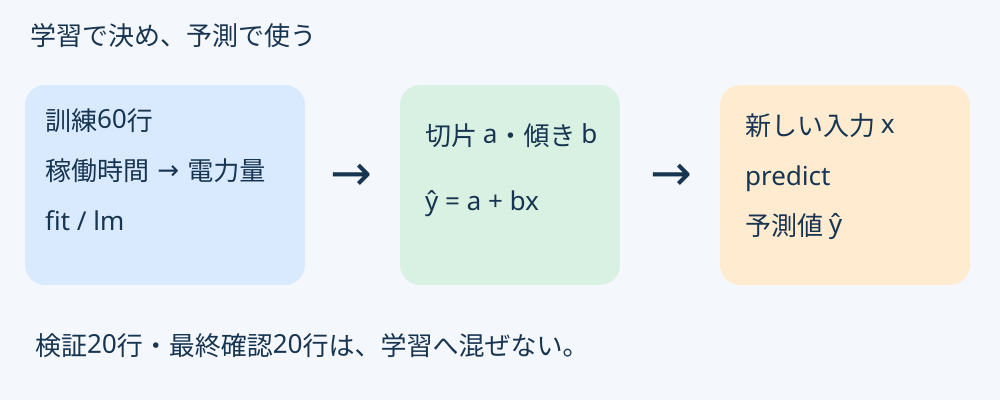
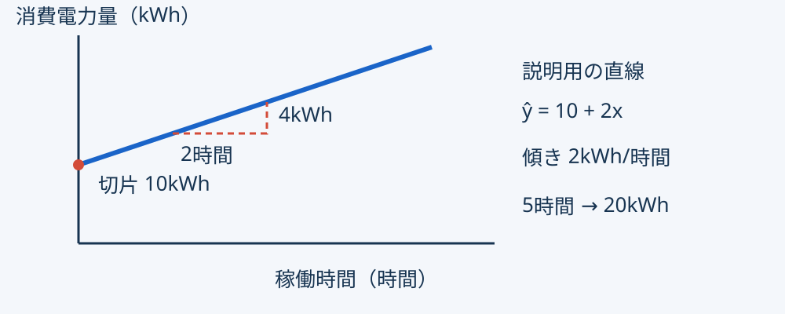
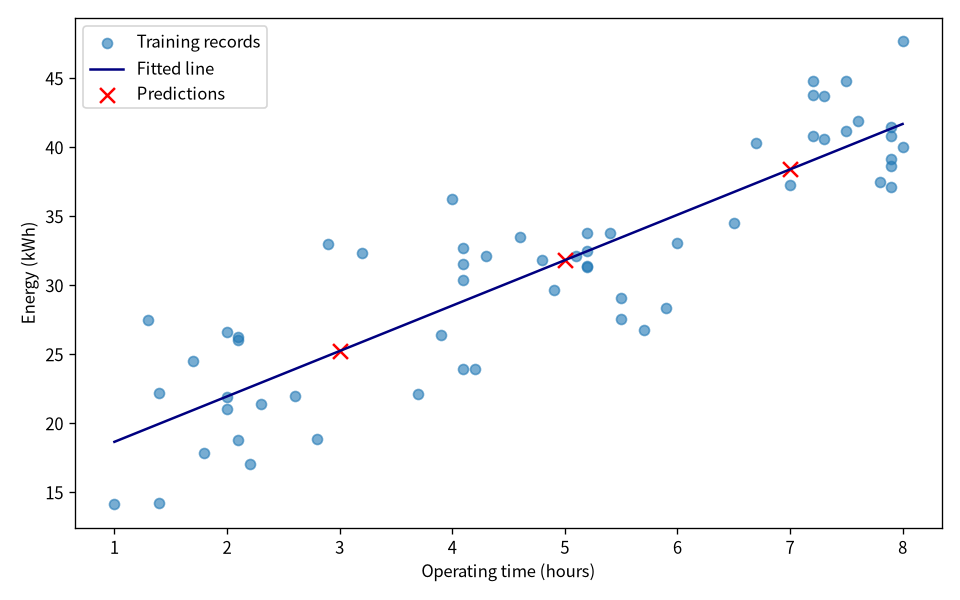

単回帰分析1
0〜10分：準備・第8回の復習
予想 → 実行 → 入力の変更 → 独立照合
| 第8回 | 第9回 |
|---|---|
| 全てに訓練平均を予測 | 稼働時間に応じて予測 |
| 一つの数を学習 | 切片と傾きを学習 |
| 訓練60行を使用 | 同じ訓練60行を使用 |
データも分割も変えません。
operating_hours（稼働時間・時間）energy_kwh（消費電力量・kWh）throughput_units は今回は使わない。答えの列をxへ入れない。
| 区分 | 行数 | 今回 |
|---|---|---|
| 訓練 | 60 | 直線の係数を決める |
| 検証 | 20 | 次回の評価に残す |
| 最終確認 | 20 | 今回配布しない |
訓練の稼働時間：1〜8時間。
予測値 ŷ = 切片 a + 傾き b × 入力 x
10〜25分：概念と小例

学生ノート§3〜6。図はクリックで拡大。

今回はライブラリで実行します。
公式の導出・p値一覧は補足。
2・4・6時間を、3・5・7時間へ変えたら？
予想を一文メモする。
lesson09.pyを保存して授業タスクで実行。lesson09.Rも実行。25〜50分：主例と図
| Python | R | 意味 |
|---|---|---|
model.intercept_ |
coefficients[[1]] |
切片 a |
model.coef_[0] |
coefficients[[2]] |
傾き b |
添字：Pythonは0から、Rは1から。
属性のintercept_に丸括弧は付けません。

横軸：時間 ／ 縦軸：kWh。
全ての訓練点が線に乗る必要はない。
exercise09を選ぶ。50〜70分：変更演習
exercises/lesson09/output/
predictions.csv：入力3行と予測。regression.png：訓練点・直線・予測点。CSV列：operating_hours, prediction_kwh
元CSVに上書きしません。
verifyも3・5・7時間へ変更。70〜80分：照合と説明
自分の係数を使う：
計算途中で係数を丸めない。
コードから独立して電卓などで確認。
末尾の丸めと、条件違いを区別。
| 項目 | 約値 |
|---|---|
| 切片（kWh） | 15.34054642 |
| 傾き（kWh/時間） | 3.28984896 |
| 3時間／5時間／7時間（kWh） | 25.2101／31.7898／38.3695 |
3→5時間の増分：約6.5797kWh。
newdataを省いてしまう。学生ノート§9の問いに、自分の言葉で。
Formsへ：
PDF・CSV・PNGの添付提出は不要。
80〜90分：提出・質問
同じデータ・同じ分割を継続。
訓練で係数を決め、入力を変えて予測する。
質問はノートの節とコードを示して。